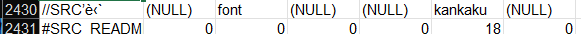
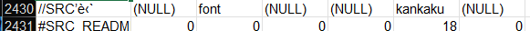

Play Skin definitions
In vanilla LR2, you can set the play skin options by holding down the numeric keys (not on the numpad) and pressing arrow keys accordingly.- Key 1: Change skin position (Left/Right to change x, Up/Down to change y)
- Key 2: Change zoom level (Up/Down)
- Key 3: Change judge display position (Left/Right to change x, Up/Down to change y)
- Key 4: Change note size (Left/Right)
- Key 5: Dark mode (Dark 1: Hides everything not on gr 0 (?), Dark 2: Hides everything but notes and judgement)
- Key 6: Change 1P note position
- Key 7: Change 2P note position
In Lunatic Vibes, you can instead press F1 to bring up the skin options menu, which allows you to change the skin position, judge display position, note size, and note positions.
#SRC_BGA

The definition of the BGA of a chart.
It's mostly a dummy definition, with the ecxeption of the last 3 arguments. If any of those (nobase, nolayer, nopoor) is 1, that layer won't show up.
You can instead define its properties in #DST_BGA.
#SRC_JUDGELINE

Definition of the judgement line. This only serves are a visual cue for where the note is supposes to go to.
The actual judgement processing line is the y value in #DST_NOTE.
However, this is used to specify the part that move up ith LIFT.
| Definition | Description |
|---|---|
| index (NULL) |
Specify the playside:
|
#SRC_LINE
Defines the measure divider line. If you don't like it, you can make it transparent, but if you don't define it,
THE CLIENT WILL CRASH WHEN THE CHART LOADS!!!
| Definition | Description |
|---|---|
| index (NULL) |
Specify the playside:
|
#SRC_NOTE
Notes definition. The judgement is processed at DST_y, so make sure that this is properly defined.
It's not mandatory to definte the notes, but well... you can't hit anything. The game will pass those as misses even if you "hit" them.
It's also worth noting that the notes can only fall downwards, so you can't define notes that go upwards via normal means.

| Definition | Description |
|---|---|
| SRC_NOTETYPE |
Specify the notes to be defined.
These will default to SRC_NOTE if not specified. |
| index (NULL) | The number index to assign notes to. It ranges from 0 to 9, with 0 for the scratch lane. For 2P definitions, it ranges from 10 to 19. |
#SRC_NOWJUDGE
Dedicated judgement indicator.
For 1P, it is #SRC_NOWJUDGE_1P, and for 2P, it is #SRC_NOWJUDGE_2P. It is used in conjunction with timer46 and timer47.

| Definition | Description |
|---|---|
| index (NULL) |
Specifies the judgement:
|
| noshift | Disable judgement shifting when a new digit for the combo is used. |
It's worth noting that you can also define this using #DST_IMAGE paired with op241-246 (261-266 for 2P) along with timer46 (47 for 2P) to achieve similar effects.
#SRC_NOWCOMBO
Dedicated combo display definition. Use #SRC_NOWCOMBO_1P for 1P, #SRC_NOWCOMBO_2P for 2P.
Technically, you can use the same index values as #SRC_NOWJUDGE, but anything lower than 3 is useless since they are combo breakers.
The xy in #DST_NOWCOMBO is relative to #DST_NOWJUDGE definition.
| Definition | Description |
|---|---|
| index (NULL) |
Specifies the judgement:
|
| align |
This is slightly different than the NUMBER definition:
|
| keta | Same as in #SRC_NUMBER. For 99% of the charts, 4 is enough, and for 99,99999999% of charts, 5 is enough. You can use 6 to correctly display the combo on 100% of the charts. |
#SRC_GROOVEGAUGE
The definition of the LR2 groove gauge. Note that the wh values represent one bar (2%), creating 50 for 100%.
Ihe #SRC should contain all possible values, inactive, active, Hard On and Hard Off.
| Definition | Description |
|---|---|
| index | Specifies the playside. 0 for 1P, 1 for 2P. |
| add_x add_y |
Specifies the position where the next gauge slice is displayed, relative to the last slice.
Depending on certain settings, the gauge is reversed on 2P side, causing add_x to be negative and the gauge rises from right to left. |
Song Select skin
Unlike most other special definitions, the music wheel (song selection bars) reads the index value differently between #SRC and #DST:
You have to define the entire song wheel (at least up to #SRC_BAR_TITLE), or else
THE CLIENT WILL CRASH UPON LOADING THE SKIN!!!
In addition, they also have what's called "panels" to change settings, play options, among other things.
They are made by branching image definitions with timer21-29 for opening and 31-39 for closing.
Note that there are no universal definitions for the panels, so you pretty much assign them to whatever you want. Keep in mind that panel 1 is usually set as the play options panel, as it is opened when you hold down the START button.
#SRC_BAR_BODY
Where the bar definitions are cut and used from.
#DST_BAR_BODY
Defines where and how the bars should be displayed. The animation of each bar can be defined individually.
The other bar definitions will base its xy position on the relative position of the bar.
#BAR_CENTER
Specify the default bar to be focused when the select skin loads. It should be inside the range of #BAR_AVAILABLE.
#BAR_AVAILABLE
Sets the range in which bars can be clicked to focus. Outside this range, clicking will scroll the song list up and down.
#SRC_BAR_FLASH
The overlay of the focused bar. DST xy coordinates are relative to the coordinates of the bar.
#SRC_BAR_LEVEL
Displays the song play level. It is essentially the same as in NUMBER definition, except for where the xy anchor is.
#SRC_BAR_LAMP
Display the clear lamp of each song.
#SRC_BAR_TITLE
The title on the song bar. It it technically a TEXT definition, so the longer the title of the song is, the more squished it can get.
(The infamous %E3%83%96%E3%83%B3%E3%82%BF%E3%83%B3 ～Falling in "B" mix～ is a prime example)
Depending on how your music wheel is defined, you can set the w value in DST to 65535 (practically unlimited)
#SRC_BAR_RANK
Display the DJ RANK of the selected song in the Rival folder.

#SRC_BAR_RIVAL
Definition for you Win/Lose/Draw status. There is also a Not Played option, but this is optional.
#SRC_README
README display. Only the first line needs to be defined, the rest will be handled by the file itself. kankaku specifies the line spacing in pixels.
It is good practice to set the w value in DST to a really huge number as well (99999). 
#SRC_MOUSE_CURSOR
The mouse cursor definition. It points to the upper left corner of the cursor sprite.
When the mouse has stopped moving for a certain amount of time, it disappears, and there is no way to animate the disappearance.
While it is only commonly used in Select, Theme and Key Config skins, it can technically work on other skins if it is defined (acording to the original help file)
Without it, the position and button input of the mouse is still detected, but good luck figuring out where your cursor is pointing.
The xy coordinates of DST is mostly 0 since it is relative to the SRC definition. If you change it, you can offset the clicking position (unconfirmed)
Unlike most other special definitions, the music wheel (song selection bars) reads the index value differently between #SRC and #DST:
- For #SRC the index defines the type of bar on the music wheel,
- While for #DST it simply tells the position of the current bar.
You have to define the entire song wheel (at least up to #SRC_BAR_TITLE), or else
THE CLIENT WILL CRASH UPON LOADING THE SKIN!!!
In addition, they also have what's called "panels" to change settings, play options, among other things.
They are made by branching image definitions with timer21-29 for opening and 31-39 for closing.
Note that there are no universal definitions for the panels, so you pretty much assign them to whatever you want. Keep in mind that panel 1 is usually set as the play options panel, as it is opened when you hold down the START button.
#SRC_BAR_BODY
Where the bar definitions are cut and used from.
| Definition | Description |
|---|---|
| index | Specifies what to use to different folders:
|
#DST_BAR_BODY
Defines where and how the bars should be displayed. The animation of each bar can be defined individually.
The other bar definitions will base its xy position on the relative position of the bar.
| Definition | Description |
|---|---|
| DST definition | There are two types:
#DST_BAR_BODY_ON is always in the range of #BAR_AVAILABLE. |
| index | Specifies what bar number it is, starting from 0. Up to 30 of them can be used. |
#BAR_CENTER
Specify the default bar to be focused when the select skin loads. It should be inside the range of #BAR_AVAILABLE.
#BAR_AVAILABLE
Sets the range in which bars can be clicked to focus. Outside this range, clicking will scroll the song list up and down.
#SRC_BAR_FLASH
The overlay of the focused bar. DST xy coordinates are relative to the coordinates of the bar.
#SRC_BAR_LEVEL
Displays the song play level. It is essentially the same as in NUMBER definition, except for where the xy anchor is.
| Definition | Description |
|---|---|
| index | Specifies the difficulty it is used for:
|
#SRC_BAR_LAMP
Display the clear lamp of each song.
| Definition | Description |
|---|---|
| SRC |
There are 3 definitions:
|
| index | Specifies the lamp (clear type):
|
#SRC_BAR_TITLE
The title on the song bar. It it technically a TEXT definition, so the longer the title of the song is, the more squished it can get.
(The infamous %E3%83%96%E3%83%B3%E3%82%BF%E3%83%B3 ～Falling in "B" mix～ is a prime example)
Depending on how your music wheel is defined, you can set the w value in DST to 65535 (practically unlimited)
| Definition | Description |
|---|---|
| index | Specifies the song type: 0 for normal songs, 1 for new songs. |
#SRC_BAR_RANK
Display the DJ RANK of the selected song in the Rival folder.
| Definition | Description |
|---|---|
| index | Specifies the grade.
|
#SRC_BAR_RIVAL
Definition for you Win/Lose/Draw status. There is also a Not Played option, but this is optional.
| Definition | Description |
|---|---|
| index | Specifies the status.
|
#SRC_README
README display. Only the first line needs to be defined, the rest will be handled by the file itself. kankaku specifies the line spacing in pixels.
It is good practice to set the w value in DST to a really huge number as well (99999). 
#SRC_MOUSE_CURSOR
The mouse cursor definition. It points to the upper left corner of the cursor sprite.
When the mouse has stopped moving for a certain amount of time, it disappears, and there is no way to animate the disappearance.
While it is only commonly used in Select, Theme and Key Config skins, it can technically work on other skins if it is defined (acording to the original help file)
Without it, the position and button input of the mouse is still detected, but good luck figuring out where your cursor is pointing.
The xy coordinates of DST is mostly 0 since it is relative to the SRC definition. If you change it, you can offset the clicking position (unconfirmed)
Results skin
The flowchart of the intended results skin is as follows:
#SRC_GAUGECHART
Gauge chart definition. For 1P, it is #SRC_GAUGECHART_1P, for 2P, it is #SRC_GAUGECHART_2P.
The xy coordinates of the DST specifies the lower left point of the graph. (0% gauge at 0% of the songs)
Do note there are issues if wh is set to 1. I don't know why.
#SRC_SCORECHART
Score graph definition. There is no specific 2P definition, and instead the index to define the 2P score graph.
Again, the xy coordinates in DST specifies the lowest left point.
The flowchart of the intended results skin is as follows:
- timer0 skin load
- #SRC_GAUGECHART start load
- #STARTINPUT start load
- timer151 #SRC_GAUGECHART end load
- #STARTINPUT rank load
- timer152 #STARTINPUT update load
- timer2 #FADEOUT
#SRC_GAUGECHART
Gauge chart definition. For 1P, it is #SRC_GAUGECHART_1P, for 2P, it is #SRC_GAUGECHART_2P.
The xy coordinates of the DST specifies the lower left point of the graph. (0% gauge at 0% of the songs)
Do note there are issues if wh is set to 1. I don't know why.
| Definition | Description |
|---|---|
| index | Specifies the gauge type.
|
| field_w field_h |
Specifies the size of the graph area. |
| start | Specifies the time in ms when the graphs starts drawing. |
| end | Specifies the time in ms when the graphs finishes drawing. |
#SRC_SCORECHART
Score graph definition. There is no specific 2P definition, and instead the index to define the 2P score graph.
Again, the xy coordinates in DST specifies the lowest left point.
| Definition | Description |
|---|---|
| index | Specifies the type of the score graph to use:
|
| field_w field_h |
Specifies the size of the graph area. |
| start | Specifies the time in ms when the graphs starts drawing. |
| end | Specifies the time in ms when the graphs finishes drawing. |